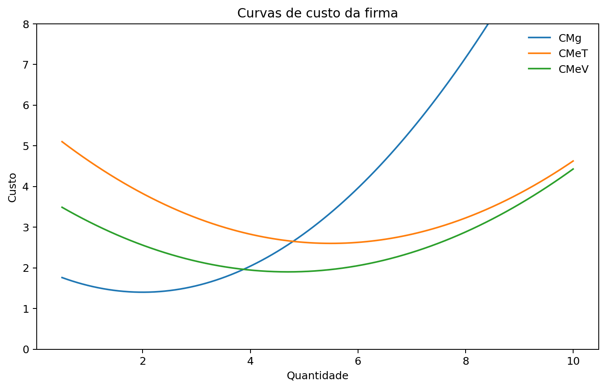
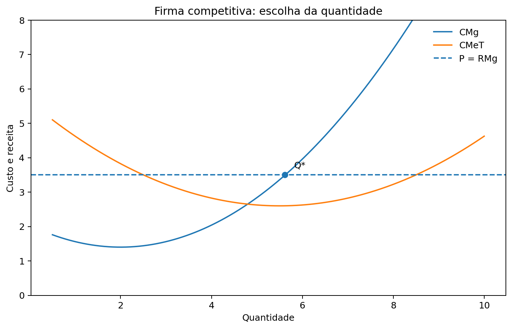
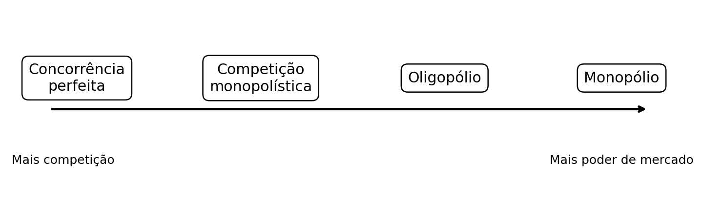
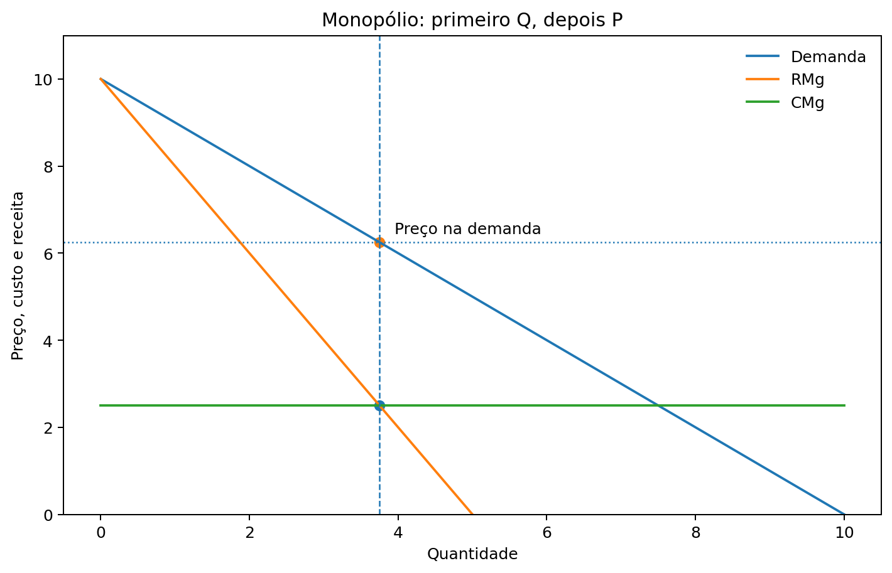

Aula 4 — Custos, firma competitiva e estruturas de mercado
1. Lucro e custo de oportunidade
2. Produção e produto marginal
4. Custos médios e custo marginal
9. Produzir ou suspender no curto prazo?
10. Entrada e saída no longo prazo
11. Lucro econômico zero não significa trabalhar de graça
12. Estruturas de mercado: o mapa geral
14. Monopólio: quantidade e preço
15. Concorrência perfeita × monopólio
17. Competição monopolística no longo prazo
19. Cartel e incentivo para desviar
20. Dilema dos prisioneiros e concorrência
21. Quatro estruturas para guardar
Ao final desta aula, você deverá ser capaz de:
A firma busca transformar recursos em bens e serviços e precisa comparar receitas e custos.
\[\text{Lucro}=\text{Receita Total}-\text{Custo Total}\]
Para o economista, o custo inclui custos de oportunidade.
Custos explícitos: exigem pagamento monetário.
Custos implícitos: não exigem pagamento, mas representam oportunidades abandonadas.
Por isso, lucro econômico e lucro contábil podem ser diferentes.
A função de produção relaciona a quantidade de insumos utilizada à quantidade produzida.
O produto marginal mede quanto a produção aumenta quando acrescentamos uma unidade de determinado insumo.
Em muitas situações aparece o produto marginal decrescente:
mantendo outros fatores constantes, unidades adicionais de um insumo acrescentam cada vez menos à produção.
Essa ideia ajuda a explicar por que o custo marginal pode crescer.
Custo fixo (CF): não varia com a quantidade produzida no período analisado.
Exemplos didáticos: aluguel de uma instalação ou determinado contrato fixo.
Custo variável (CV): varia com a produção.
Exemplos: matérias-primas e parte dos gastos com trabalho.
\[CT=CF+CV\]
A classificação depende do horizonte de tempo considerado.
\[CMeT=\frac{CT}{Q}\]
\[CMeV=\frac{CV}{Q}\]
\[CMg=\frac{\Delta CT}{\Delta Q}\]
O custo médio total informa o custo por unidade.
O custo marginal informa quanto o custo total aumenta ao produzir uma unidade adicional.
Relação importante
Quando o CMg está abaixo do custo médio, ele puxa a média para baixo. Quando está acima, puxa a média para cima.

No modelo usual:
A escala em que o CMeT é mínimo é chamada de escala eficiente.
No curto prazo, alguns fatores permanecem fixos.
No longo prazo, a firma possui maior capacidade de ajustar seus fatores e sua escala.
Podem existir:
Não significa que todo custo necessariamente cai no longo prazo.
No modelo de concorrência perfeita:
A firma é tomadora de preço.
Para a firma competitiva:
\[P=RMe=RMg\]
A livre entrada e saída torna-se especialmente importante para analisar o longo prazo.
A regra geral de maximização de lucro é:
\[RMg=CMg\]
Na concorrência perfeita:
\[RMg=P\]
Logo:
\[P=CMg\]

Se RMg > CMg, aumentar a produção eleva o lucro. Se CMg > RMg, reduzir a produção melhora o resultado.
Encontrar \(P=CMg\) responde quanto produzir, mas ainda precisamos perguntar se vale a pena operar.
No curto prazo, os custos fixos já existem.
A firma suspende temporariamente a produção quando:
\[P<CMeV\]
Se:
\[CMeV\leq P<CMeT\]
a firma pode continuar produzindo no curto prazo mesmo apresentando prejuízo, pois cobre os custos variáveis e parte dos fixos.
No longo prazo, a firma pode sair do mercado.
Se o preço não cobre o custo médio total, há incentivo à saída.
Com firmas semelhantes e livre entrada e saída:
lucros → entrada de firmas → aumento da oferta
prejuízos → saída de firmas → redução da oferta
No equilíbrio competitivo usual de longo prazo:
\[P=RMg=CMg=\min CMeT\]
e o lucro econômico é zero.
O custo econômico inclui também os custos de oportunidade do proprietário.
Portanto, lucro econômico zero significa que a receita cobre:
Uma empresa pode apresentar lucro contábil positivo e lucro econômico igual a zero.
Essa distinção conecta diretamente os capítulos 13 e 14.

| Estrutura | Vendedores | Característica central |
|---|---|---|
| Concorrência perfeita | Muitos | Produto homogêneo; firma aceita o preço |
| Competição monopolística | Muitos | Produto diferenciado |
| Oligopólio | Poucos | Interdependência estratégica |
| Monopólio | Um | Barreiras à entrada e ausência de substituto próximo |
O restante da aula é um resumo introdutório dos capítulos 15, 16 e 17.
Um monopólio possui um único vendedor no mercado relevante e é protegido por barreiras à entrada.
As barreiras podem estar associadas, por exemplo, ao controle de um recurso, decisões governamentais ou características de monopólio natural.
O monopolista possui poder de mercado, mas não pode escolher livremente qualquer combinação de preço e quantidade: ele continua limitado pela demanda.
A regra de maximização continua sendo:
\[RMg=CMg\]
Mas, no monopólio:
\[P>RMg\]
O procedimento é:
1. Encontrar a quantidade em \(RMg=CMg\).
2. Subir até a curva de demanda para encontrar o preço.

Erro comum
O cruzamento de RMg e CMg determina a quantidade, não o preço do monopolista.
\[P=RMg=CMg\]
A firma individual aceita o preço.
\[P>RMg=CMg\]
O monopolista restringe a quantidade em relação à referência competitiva e cobra preço maior.
Isso pode gerar perda de peso morto, pois algumas trocas potencialmente vantajosas deixam de ocorrer.
A competição monopolística combina:
Exemplos didáticos podem incluir restaurantes, roupas ou serviços diferenciados, dependendo de como o mercado é definido.
Cada firma enfrenta uma demanda descendente porque seu produto não é perfeitamente idêntico ao dos concorrentes.
No curto prazo, a firma pode obter lucro ou prejuízo.
Com livre entrada e saída, o número de firmas se ajusta.
No equilíbrio de longo prazo do modelo:
\[P=CMeT>CMg=RMg\]
O lucro econômico é zero, mas o preço continua acima do custo marginal.
Assim, lucro zero não transforma a competição monopolística em concorrência perfeita.
Um oligopólio possui poucos vendedores relevantes.
A palavra-chave é interdependência estratégica:
a decisão de uma firma afeta as outras, e cada firma precisa considerar as possíveis reações dos rivais.
Preços, quantidades, publicidade e entrada podem depender das decisões dos concorrentes.
A teoria dos jogos ajuda a estudar essas situações.
Firmas oligopolistas podem ter interesse coletivo em reduzir a produção e elevar o preço.
Um acordo de coordenação pode formar um cartel.
Mas existe um problema:
aquilo que é melhor para o grupo pode não ser a melhor decisão individual de cada participante.
Depois que o cartel define uma quantidade, cada firma pode ter incentivo para vender um pouco mais.
Esse conflito ajuda a explicar por que a cooperação pode ser difícil de sustentar.
O dilema dos prisioneiros mostra uma situação em que decisões individualmente racionais podem produzir um resultado coletivo pior para os participantes.
No oligopólio, ele ajuda a compreender por que:
Jogos repetidos podem alterar esses incentivos.
| Estrutura | Nº de vendedores | Produto | Entrada | Decisão central |
|---|---|---|---|---|
| Concorrência perfeita | Muitos | Homogêneo | Livre | Aceita preço |
| Competição monopolística | Muitos | Diferenciado | Livre | Algum poder de preço |
| Oligopólio | Poucos | Homogêneo ou diferenciado | Barreiras frequentes | Considera rivais |
| Monopólio | Um | Sem substituto próximo | Barreiras | Escolhe Q e lê P na demanda |
Do resumão da UnB
Monopólio não garante lucro. Oligopólio não significa necessariamente cartel. Lucro econômico zero não significa ausência de remuneração.
Produção → custos → CMg e CMeT
P = RMg → produzir onde P = CMg → verificar se vale a pena operar
Concorrência perfeita → competição monopolística → oligopólio → monopólio
À medida que mudam o número de firmas, a diferenciação e as barreiras à entrada, muda também o poder de mercado e a forma como a firma toma decisões.
Ideia central
As curvas de custo ajudam a entender como a firma produz. A estrutura de mercado ajuda a entender como ela transforma custos, demanda e concorrência em decisões de quantidade e preço.
MANKIW, N. Gregory. Principles of Economics. 8. ed. Cengage Learning, 2018. Capítulos 13 e 14.
Para a revisão das estruturas de mercado, foram condensados os materiais das aulas da UnB baseados nos capítulos 15, 16 e 17 do mesmo livro.